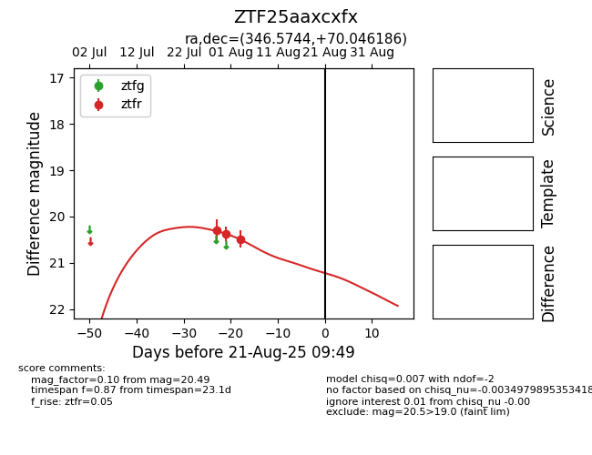

Target ZTF25aaxcxfx at 2025-08-21 09:49, see:
FINK: fink-portal.org/ZTF25aaxcxfx
Lasair: lasair-ztf.lsst.ac.uk/objects/ZTF25aaxcxfx
ALeRCE: alerce.online/object/ZTF25aaxcxfx
alt names
ZTF25aaxcxfx (ztf,alerce)
coordinates:
equatorial (ra, dec) = (346.5744,+70.04619)
galactic (l, b) = (114.1308,+8.99190)
photometry
last ztfr=20.49
3 ztfr detections
